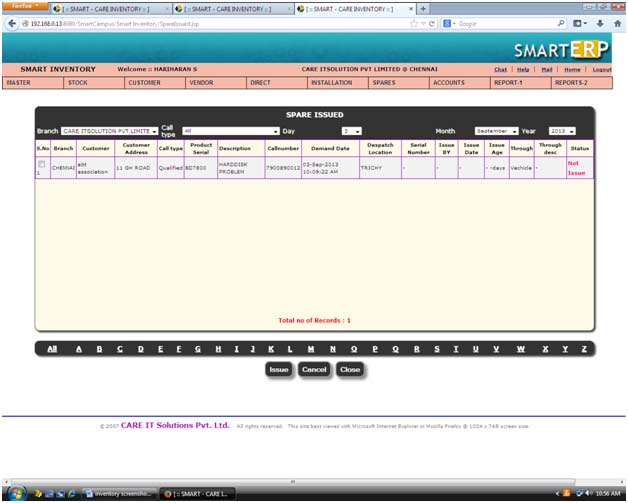
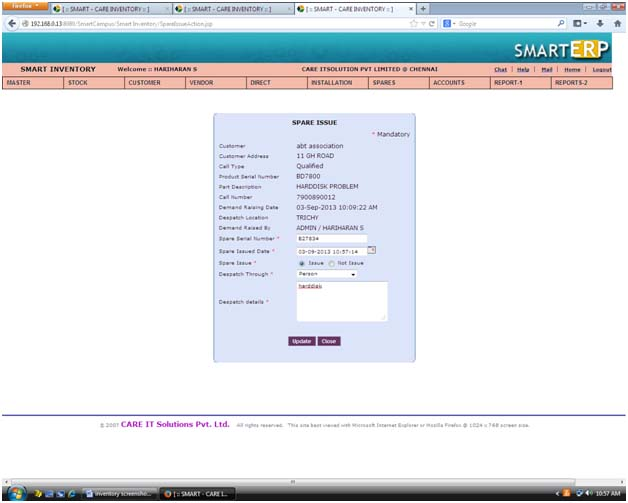

|
||
Spare Issued |
||
| This is spare issue view screen. We can issue and cancel the spare issue. | ||
| To update spare issue by click the issue button | ||
| To cancel spare issue by using cancel button | ||
| To filter spare issue by using alphabetic filter, branch, call type, day, month and year. | ||
|  | ||
Issue : |
||
| To update spare issue. | ||
| Choose or tick the check box for spare issue in view screen | ||
| Click the issue button in spare issue view screen | ||
| Enter serial number | ||
| Select spare issue date,spare issue,dispatch through. Enter dispatch details. |
||
| Click update button | ||
| Spare issue successfully updated. | ||
|  | ||